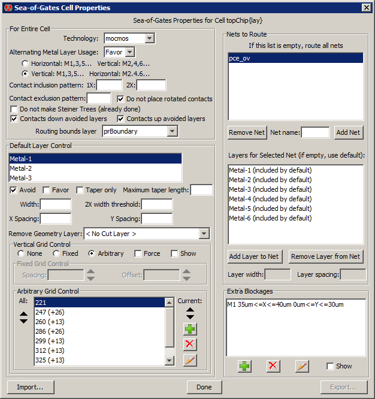

The sea-of-gates router is able to take an arbitrary set of unrouted arcs and convert them to layout.
To run it, use the Sea-Of-Gates Route this Cell command (in menu Tools / Routing).
If there are unrouted arcs selected, these will be the only ones converted.
Otherwise, all unrouted arcs in the cell will be converted.
If sub-cells below the current cell need to be routed, use Sea-of-Gates Route Sub-Cells.
Sea-of-Gates Routing Preferences
The router can be controlled by the Routing Preferences and by cell-specific properties.
The Routing Preferences (in menu File / Preferences..., "Tools" section, "Routing" tab)
has these options:
- Maximum arc width lets you set the maximum width of a route segment.
By default, each segment is made as wide as the widest arc already connected to that segment.
However, sometimes there are very wide arcs, and the connecting routes should not be that wide.
By setting the maximum width, this limits the size of generated layout.
- Search complexity limit sets the maximum number of steps that
the router will take to find a route.
The larger the value, the longer the router will run before it gives up.
- Maximum search factor controls the maximum area that will be considered for a route.
This value is multiplied by the largest design-rule spacing, so a factor of 10 and a maximum
spacing of 15 means that the router will consider up to 150 units outside the bounding rectangle
of a route.
- Do Global Routing requests that a global routing preprocessing step be done
to plan the path of each route.
Global routing divides the cell into a grid, and forces each routes to run in certain grid squares.
This distributes congestion uniformly and can give better routing results.
- Do Spine Routing requests that special spine routing techniques be applied where applicable.
The Spine routing option finds the longest route in a daisy-chained network and then adds "taps"
to the spine for the intermediate points on the daisy-chain.
When enabled, spine routing is done on any daisy-chained network with an aspect ratio of 50:1 or more.
- Rerun routing with failed routes requests that the router run again
after it finishes in an attempt to complete those routes that failed the first time.
You can set a different complexity limit for this step.
- Run even on connected routes requests that the router connect points
that are already connected geometrically. When unchecked, routes that already connect
are ignored by the router.
- Contact options There are four ways to place contacts in the routed circuit:
- Contacts at top level place contacts where they are needed at the top level of the cell.
- Contacts use existing subcells or place at top look for subcells that have the desired contact geometry
and place instances of those subcells instead of actual contacts. Other contacts are placed at the top level.
- Contacts use existing subcells or create new ones look for subcells that have the desired contact geometry
and place instances of those subcells instead of actual contacts. Other contacts cause new subcells to be created.
- Contacts create new subcells all contacts are placed in newly-created subcells.
- Use two processors per route tells the router to use two threads for each route
(one tries to run a path from end 1 to end 2, the other tries to run a path from end 2 to end 1).
The thread that completes first terminates the other thread.
When not checked, the router alternates steps in the two directions, stopping when one of
the directions reaches its goal.
- Do multiple routes in parallel uses multiple processors to run routes in parallel.
- Forced processor count tells the router to ignore the actual number of processors
on the machine and to use the specified number of threads.
Sea-of-Gates Cell Properties
|
Users can set cell-specific properties that control how a particular cell is routed.
Use the Sea-Of-Gates Cell Properties... command in the Tools / Routing menu to control this.

The upper-left part of the dialog controls routing properties for the entire cell.
- Alternating Metal Layer Usage controls the placement of alternating layers
for horizontal and vertical wires.
You can choose to force this usage, favor the usage (enforces it most of the time,
but not always), or ignore the usage.
You can then choose whether odd-numbered arcs are horizontal or vertical.
- Contact inclusion pattern and Contact exclusion pattern let you specify which contacts in
the technology to use for routing.
You can also select contacts to use in 2X routing.
For example, to force only contacts that start with the letters "X-", set the inclusion pattern to "X-(\w+)"
- Do not place rotated contacts Requests that asymmetric contacts not be tried in a rotated orientation.
- Do not make Steiner Trees (already done) Before routing begins, the unrouted arcs
are reorganized so that daisy-chains
(multiple arcs on a single network that connect more than two ports) run in the most efficient way.
This efficient path is called a "Steiner Tree".
If you believe that the routes are already optimized, you can request that this step be skipped.
- Contacts down avoided layers and Contacts up avoided layers Requests that nets which
start or end on forbidden layers be allowed to place a contact up or down to a permitted layer.
The contact cannot create new geometry on the forbidden layer, so the necessary area on that layer must
already exist.
- Routing bounds layer sets the layer which will limit the bounds of routing.
If geometry exists in that layer, the extent of the geometry will define the bounds of routing.
| |
The lower-left part of the dialog controls individual layers in the cell.
It lets you disable the use of any layer, or favor it above others.
You can also request that a layer be a taper by setting a Maximum taper length
Tapers are the initial or final segments
of a route which use the width of the geometry at the end, rather than the default width.
They have a limited run length.
You can also request that a given layer be available only for tapers, and not for intermediate routing.
For each layer, you can also override the default width and spacing rules on that layer.
The "2X width threshold" is the width above which a wire is considered to be "2X" in size.
When that happens, special contacts may be used, and mask colors are flipped
(only relevant in technologies that have multiple masks on a layer).
The Remove Geometry Layer is a layer which will remove the presence of the given layer.
For example, if the Remove Geometry Layer for Metal-1 is set to a layer called "DM1",
then the presence of the DM1 layer will actually remove any Metal-1 under it for the purposes of routing.
Another layer control is the use of grids.
Grids can be Fixed (with a spacing and an offset)
or Arbitrary (with multiple grid coordinates).
When editing arbitrary grids, icons on the right let you create new grid coordinates, delete existing ones,
and even draw the location on the screen.
Click Show to draw the grids on the cell to help you see where the grids actually are.
The upper-right side of the dialog controls individual nets that are to be routed.
If nothing is listed at the top, then all highlighted nets are routed (or all nets, if nothing is highlighted).
Use the Add NetRemove Net button to remove selected nets from the list.
When a net is selected, you can even override the layers that will be used to route that net
and you can override the width and spacing rules for that layer on that net.
The lower-right part of the dialog lets you add arbitrary rectangles in the chip on given metal layers
which will act as blockages, preventing routing in that area.
The "add" icon creates new blockages, the "delete" icon removes them, the "edit" icon modifies the selected blockage,
and the Show button shows all blockages in the circuit.
At the bottom, the "Import..." button reads a command file that can fill this dialog with values.